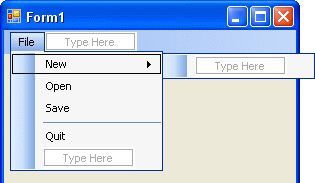
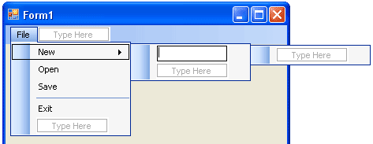
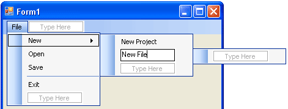
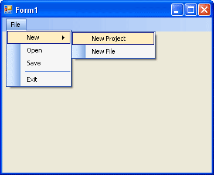

Add a Sub Menu to your VB.NET Form
This tutorial assumes that you have completed the first one.
A sub menu is one that branches of a menu item. They usually have an arrow to indicate that there's an extra menu available. You will have seen these plenty of times in Windows programmes.
You can create our own sub menus quite easily. Try this:
- Return to the Form view (Shift + F7 is a shortcut)
- Click on your File menu so that you can see it all
- Select the New item (Careful where you click. Click once on the left edge). You should see this:

- Click on the "Type Here" just to the right of New
- You'll see yet more "Type Here" areas:

- Type New Project, and then hit the return key on your keyboard
- Type in New File and then click away from the menu, somewhere on the form
- You will then have a menu like this one:

- Save your work, and then run your programme. Click your new menu to see the following:

Of course, none of the menu items work except the Exit menu. But you should have found that adding menus to your programmes is an easy matter with VB.NET.
One more thing we can do. If you look closely at a lot of menu items, you see that they have shortcuts attached. There's two types of shortcuts: An underline shortcut, and a key combination shortcut. We'll see how to do that in the next section.